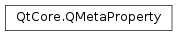

QMetaProperty¶
Synopsis¶
Functions¶
- def
enumerator() - def
hasNotifySignal() - def
hasStdCppSet() - def
isConstant() - def
isDesignable([obj=nullptr]) - def
isEditable([obj=nullptr]) - def
isEnumType() - def
isFinal() - def
isFlagType() - def
isReadable() - def
isResettable() - def
isScriptable([obj=nullptr]) - def
isStored([obj=nullptr]) - def
isUser([obj=nullptr]) - def
isValid() - def
isWritable() - def
name() - def
notifySignal() - def
notifySignalIndex() - def
propertyIndex() - def
read(obj) - def
readOnGadget(gadget) - def
reset(obj) - def
resetOnGadget(gadget) - def
revision() - def
type() - def
typeName() - def
userType() - def
write(obj, value) - def
writeOnGadget(gadget, value)
Detailed Description¶
The
PySide2.QtCore.QMetaPropertyclass provides meta-data about a property.Property meta-data is obtained from an object’s meta-object. See
QMetaObject.property()andQMetaObject.propertyCount()for details.
Property Meta-Data¶
A property has a
PySide2.QtCore.QMetaProperty.name()and aPySide2.QtCore.QMetaProperty.type(), as well as various attributes that specify its behavior:PySide2.QtCore.QMetaProperty.isReadable(),PySide2.QtCore.QMetaProperty.isWritable(),PySide2.QtCore.QMetaProperty.isDesignable(),PySide2.QtCore.QMetaProperty.isScriptable(),PySide2.QtCore.QMetaProperty.revision(), andPySide2.QtCore.QMetaProperty.isStored().If the property is an enumeration,
PySide2.QtCore.QMetaProperty.isEnumType()returnstrue; if the property is an enumeration that is also a flag (i.e. its values can be combined using the OR operator),PySide2.QtCore.QMetaProperty.isEnumType()andPySide2.QtCore.QMetaProperty.isFlagType()both return true. The enumerator for these types is available fromPySide2.QtCore.QMetaProperty.enumerator().The property’s values are set and retrieved with
PySide2.QtCore.QMetaProperty.read(),PySide2.QtCore.QMetaProperty.write(), andPySide2.QtCore.QMetaProperty.reset(); they can also be changed throughPySide2.QtCore.QObject‘s set and get functions. SeeQObject.setProperty()andQObject.property()for details.
Copying and Assignment¶
PySide2.QtCore.QMetaPropertyobjects can be copied by value. However, each copy will refer to the same underlying property meta-data.
-
class
PySide2.QtCore.QMetaProperty¶ -
class
PySide2.QtCore.QMetaProperty(QMetaProperty) Parameters: QMetaProperty – PySide2.QtCore.QMetaProperty
-
PySide2.QtCore.QMetaProperty.enumerator()¶ Return type: PySide2.QtCore.QMetaEnumReturns the enumerator if this property’s type is an enumerator type; otherwise the returned value is undefined.
-
PySide2.QtCore.QMetaProperty.hasNotifySignal()¶ Return type: PySide2.QtCore.boolReturns
trueif this property has a corresponding change notify signal; otherwise returnsfalse.
-
PySide2.QtCore.QMetaProperty.hasStdCppSet()¶ Return type: PySide2.QtCore.boolReturns
trueif the property has a C++ setter function that follows Qt’s standard “name” / “setName” pattern. Designer and uic query hasStdCppSet() in order to avoid expensiveQObject.setProperty()calls. All properties in Qt [should] follow this pattern.
-
PySide2.QtCore.QMetaProperty.isConstant()¶ Return type: PySide2.QtCore.boolReturns
trueif the property is constant; otherwise returnsfalse.A property is constant if the
Q_PROPERTY()‘sCONSTANTattribute is set.
-
PySide2.QtCore.QMetaProperty.isDesignable([obj=nullptr])¶ Parameters: obj – PySide2.QtCore.QObjectReturn type: PySide2.QtCore.boolReturns
trueif this property is designable for the givenobject; otherwise returnsfalse.If no
objectis given, the function returnsfalseif theQ_PROPERTY()‘sDESIGNABLEattribute is false; otherwise returnstrue(if the attribute is true or is a function or expression).
-
PySide2.QtCore.QMetaProperty.isEditable([obj=nullptr])¶ Parameters: obj – PySide2.QtCore.QObjectReturn type: PySide2.QtCore.boolReturns
trueif the property is editable for the givenobject; otherwise returnsfalse.If no
objectis given, the function returnsfalseif theQ_PROPERTY()‘sEDITABLEattribute is false; otherwise returns true (if the attribute is true or is a function or expression).
-
PySide2.QtCore.QMetaProperty.isEnumType()¶ Return type: PySide2.QtCore.boolReturns
trueif the property’s type is an enumeration value; otherwise returnsfalse.
-
PySide2.QtCore.QMetaProperty.isFinal()¶ Return type: PySide2.QtCore.boolReturns
trueif the property is final; otherwise returnsfalse.A property is final if the
Q_PROPERTY()‘sFINALattribute is set.
-
PySide2.QtCore.QMetaProperty.isFlagType()¶ Return type: PySide2.QtCore.boolReturns
trueif the property’s type is an enumeration value that is used as a flag; otherwise returnsfalse.Flags can be combined using the OR operator. A flag type is implicitly also an enum type.
-
PySide2.QtCore.QMetaProperty.isReadable()¶ Return type: PySide2.QtCore.boolReturns
trueif this property is readable; otherwise returnsfalse.
-
PySide2.QtCore.QMetaProperty.isResettable()¶ Return type: PySide2.QtCore.boolReturns
trueif this property can be reset to a default value; otherwise returnsfalse.See also
-
PySide2.QtCore.QMetaProperty.isScriptable([obj=nullptr])¶ Parameters: obj – PySide2.QtCore.QObjectReturn type: PySide2.QtCore.boolReturns
trueif the property is scriptable for the givenobject; otherwise returnsfalse.If no
objectis given, the function returnsfalseif theQ_PROPERTY()‘sSCRIPTABLEattribute is false; otherwise returns true (if the attribute is true or is a function or expression).
-
PySide2.QtCore.QMetaProperty.isStored([obj=nullptr])¶ Parameters: obj – PySide2.QtCore.QObjectReturn type: PySide2.QtCore.boolReturns
trueif the property is stored forobject; otherwise returns false.If no
objectis given, the function returnsfalseif theQ_PROPERTY()‘sSTOREDattribute is false; otherwise returns true (if the attribute is true or is a function or expression).
-
PySide2.QtCore.QMetaProperty.isUser([obj=nullptr])¶ Parameters: obj – PySide2.QtCore.QObjectReturn type: PySide2.QtCore.boolReturns
trueif this property is designated as theUSERproperty, i.e., the one that the user can edit forobjector that is significant in some other way. Otherwise it returns false. e.g., thetextproperty is theUSEReditable property of aPySide2.QtWidgets.QLineEdit.If
objectis null, the function returnsfalseif theQ_PROPERTY()‘sUSERattribute is false. Otherwise it returns true.
-
PySide2.QtCore.QMetaProperty.isValid()¶ Return type: PySide2.QtCore.boolReturns
trueif this property is valid (readable); otherwise returnsfalse.
-
PySide2.QtCore.QMetaProperty.isWritable()¶ Return type: PySide2.QtCore.boolReturns
trueif this property is writable; otherwise returns false.
-
PySide2.QtCore.QMetaProperty.name()¶ Return type: str Returns this property’s name.
-
PySide2.QtCore.QMetaProperty.notifySignal()¶ Return type: PySide2.QtCore.QMetaMethodReturns the
PySide2.QtCore.QMetaMethodinstance of the property change notifying signal if one was specified, otherwise returns an invalidPySide2.QtCore.QMetaMethod.
-
PySide2.QtCore.QMetaProperty.notifySignalIndex()¶ Return type: PySide2.QtCore.intReturns the index of the property change notifying signal if one was specified, otherwise returns -1.
-
PySide2.QtCore.QMetaProperty.propertyIndex()¶ Return type: PySide2.QtCore.intReturns this property’s index.
-
PySide2.QtCore.QMetaProperty.read(obj)¶ Parameters: obj – PySide2.QtCore.QObjectReturn type: object Reads the property’s value from the given
object. Returns the value if it was able to read it; otherwise returns an invalid variant.
-
PySide2.QtCore.QMetaProperty.readOnGadget(gadget)¶ Parameters: gadget – voidReturn type: object Reads the property’s value from the given
gadget. Returns the value if it was able to read it; otherwise returns an invalid variant.This function should only be used if this is a property of a
Q_GADGET()
-
PySide2.QtCore.QMetaProperty.reset(obj)¶ Parameters: obj – PySide2.QtCore.QObjectReturn type: PySide2.QtCore.boolResets the property for the given
objectwith a reset method. Returnstrueif the reset worked; otherwise returnsfalse.Reset methods are optional; only a few properties support them.
-
PySide2.QtCore.QMetaProperty.resetOnGadget(gadget)¶ Parameters: gadget – voidReturn type: PySide2.QtCore.boolResets the property for the given
gadgetwith a reset method. Returnstrueif the reset worked; otherwise returnsfalse.Reset methods are optional; only a few properties support them.
This function should only be used if this is a property of a
Q_GADGET()
-
PySide2.QtCore.QMetaProperty.revision()¶ Return type: PySide2.QtCore.intReturns the property revision if one was specified by REVISION, otherwise returns 0.
-
PySide2.QtCore.QMetaProperty.type()¶ Return type: PySide2.QtCore.QVariant::TypeReturns this property’s type. The return value is one of the values of the
QVariant.Typeenumeration.
-
PySide2.QtCore.QMetaProperty.typeName()¶ Return type: str Returns the name of this property’s type.
-
PySide2.QtCore.QMetaProperty.userType()¶ Return type: PySide2.QtCore.intReturns this property’s user type. The return value is one of the values that are registered with
QMetaType, orQMetaType.UnknownTypeif the type is not registered.See also
PySide2.QtCore.QMetaProperty.type()QMetaTypePySide2.QtCore.QMetaProperty.typeName()
-
PySide2.QtCore.QMetaProperty.write(obj, value)¶ Parameters: - obj –
PySide2.QtCore.QObject - value – object
Return type: PySide2.QtCore.boolWrites
valueas the property’s value to the givenobject. Returns true if the write succeeded; otherwise returnsfalse.If
valueis not of the same type type as the property, a conversion is attempted. An empty QVariant() is equivalent to a call toPySide2.QtCore.QMetaProperty.reset()if this property is resetable, or setting a default-constructed object otherwise.- obj –
-
PySide2.QtCore.QMetaProperty.writeOnGadget(gadget, value)¶ Parameters: - gadget –
void - value – object
Return type: PySide2.QtCore.boolWrites
valueas the property’s value to the givengadget. Returns true if the write succeeded; otherwise returnsfalse.This function should only be used if this is a property of a
Q_GADGET()- gadget –
© 2018 The Qt Company Ltd. Documentation contributions included herein are the copyrights of their respective owners. The documentation provided herein is licensed under the terms of the GNU Free Documentation License version 1.3 as published by the Free Software Foundation. Qt and respective logos are trademarks of The Qt Company Ltd. in Finland and/or other countries worldwide. All other trademarks are property of their respective owners.